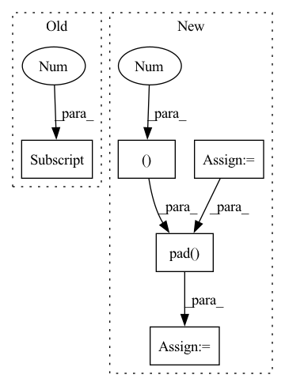

Pattern ID :5151
Before Change
mixture = mixture.squeeze(dim=0)
sources = sources.squeeze(dim=0)
estimated_sources = estimated_sources.squeeze(dim=0) // (n_sources, n_mics, T)
name = name[0]
loss_mixture = self.criterion(mixture, sources, batch_mean=False) // (n_sources,)
loss = self.criterion(estimated_sources, sources, batch_mean=False) // (n_sources,)
loss_improvement = loss_mixture - loss // (n_sources,)After Change
mixture = mixture.permute(1, 2, 0, 3) // (1, n_mics, batch_size, T_segment)
sources = sources.permute(1, 2, 0, 3) // (n_sources, n_mics, batch_size, T_segment)
estimated_sources = estimated_sources.permute(1, 0, 2, 3) // (n_sources, n_mics, batch_size, T_segment)
mixture = mixture.view(n_sources, n_mics, batch_size * T_segment)
sources = sources.view(n_sources, n_mics, batch_size * T_segment)
estimated_sources = estimated_sources.view(n_sources, n_mics, batch_size * T_segment)
mixture = F.pad(mixture, (0, -T_pad))
sources = F.pad(sources, (0, -T_pad))
estimated_sources = F.pad( estimated_sources, (0 , -T_pad ))
loss_mixture = self.criterion(mixture, sources, batch_mean=False) // (n_sources,)
loss = self.criterion(estimated_sources, sources, batch_mean=False) // (n_sources,)
loss_improvement = loss_mixture - loss // (n_sources,)In pattern: SUPERPATTERN
Frequency: 3
Non-data size: 5
Instances Fragment ID: 18309365
Project Name: tky823/dnn-based_source_separation
Commit Name: 89895750d1f5876d154cdae2fa4a60fada46b4da
Time: 2021-10-10
Author: 40362510+tky823@users.noreply.github.com
File Name: egs/musdb18/conv-tasnet/src/adhoc_driver.py
M Class Name: AdhocTester
N Class Name: AdhocTester
M Method Name: estimate_all(1)
N Method Name: estimate_all(1)
M Parent Class: TesterBase
N Parent Class: TesterBase
M File Name: egs/musdb18/conv-tasnet/src/adhoc_driver.py
N File Name: egs/musdb18/conv-tasnet/src/adhoc_driver.py
M Start Line: 186
M End Line: 191
N Start Line: 188
N End Line: 203
Before Change
self.mem_updater = Attention(dim, heads = heads)
def forward(self, src, tgt, mems = None):
b = src.shape[0]
mems = default(mems, self.memory_slots)
if mems.ndim == 2:
mems = repeat(mems, "n d -> b n d", b = b)After Change
out = self.decoder(tgt, context = enc)
// update memory with attention
mem_mask = torch.eye(num_mem, num_mem, device = device).bool()
mem_mask = F.pad( mem_mask, (0 , n ), value = True)
mems = self.mem_updater(mems, enc, mask = mem_mask, attend_self = True)
return out, mems
Fragment ID: 18309363
Project Name: lucidrains/memformer
Commit Name: e1b7c97459ec7c7f5fe37ff3bfa38bdb448a304c
Time: 2020-10-28
Author: lucidrains@gmail.com
File Name: memformer/memformer.py
M Class Name: Memformer
N Class Name: Memformer
M Method Name: forward(4)
N Method Name: forward(4)
M Parent Class: nn.Module
N Parent Class: nn.Module
M File Name: memformer/memformer.py
N File Name: memformer/memformer.py
M Start Line: 151
M End Line: 151
N Start Line: 161
N End Line: 172
Before Change
self.to_attn_logits = nn.Parameter(torch.eye(dim))
def forward(self, x):
remainder = x.shape[-1] % self.pool_size
if remainder > 0:
x = F.pad(x, (0, remainder), value = 0)
After Change
if needs_padding:
x = F.pad(x, (0, remainder), value = 0)
mask = torch.zeros((b, 1, n), dtype = torch.bool, device = x.device)
mask = F.pad( mask, (0 , remainder ), value = True)
attn_logits = einsum("b d n, d e -> b e n", x, self.to_attn_logits)
x = self.pool_fn(x)
logits = self.pool_fn(attn_logits) Fragment ID: 18309362
Project Name: lucidrains/enformer-pytorch
Commit Name: d6c7c92831f85618e38d208d15a411e1259fa4b3
Time: 2021-10-30
Author: lucidrains@gmail.com
File Name: enformer_pytorch/enformer_pytorch.py
M Class Name: AttentionPool
N Class Name: AttentionPool
M Method Name: forward(2)
N Method Name: forward(2)
M Parent Class: nn.Module
N Parent Class: nn.Module
M File Name: enformer_pytorch/enformer_pytorch.py
N File Name: enformer_pytorch/enformer_pytorch.py
M Start Line: 122
M End Line: 128
N Start Line: 122
N End Line: 139